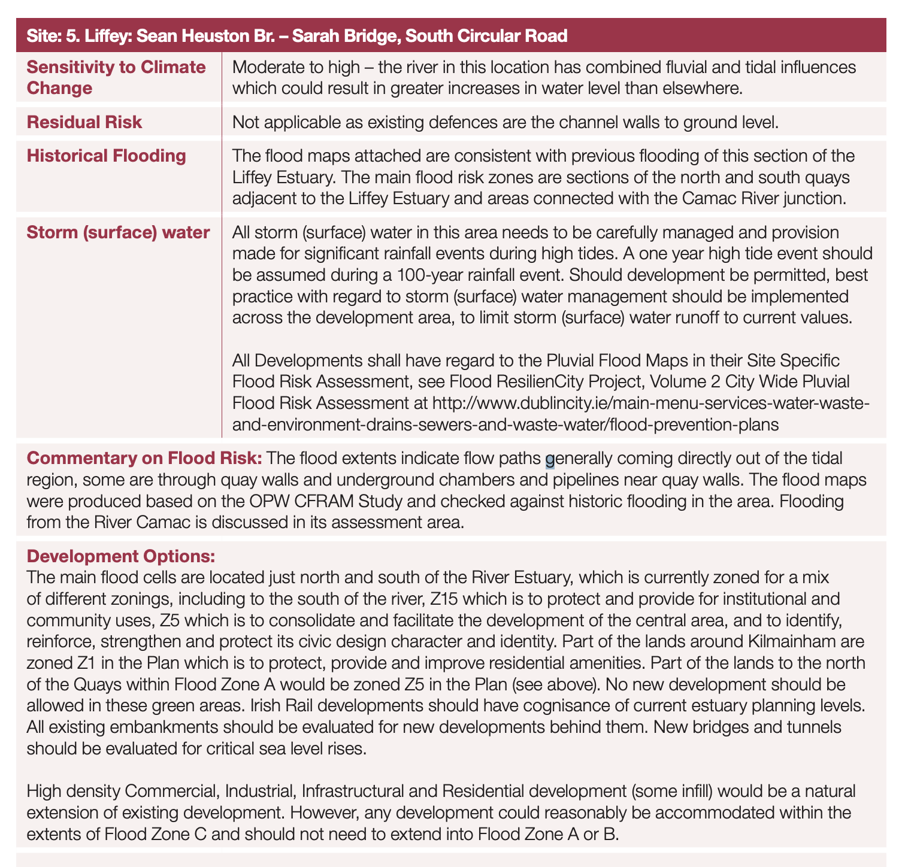
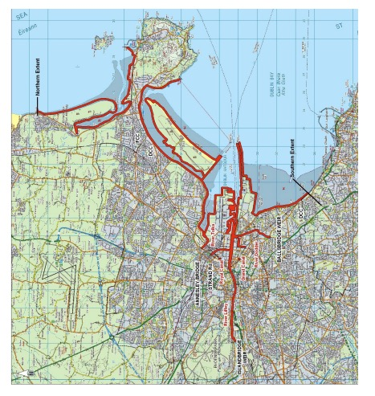
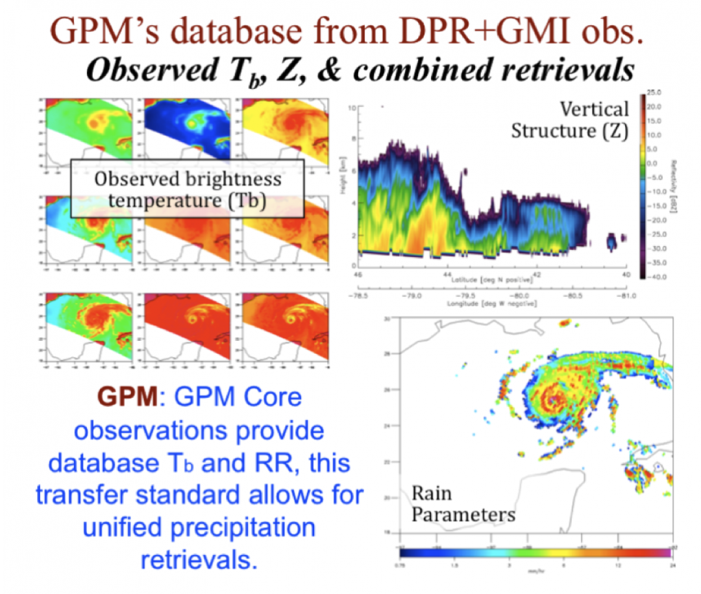

5 Week_4 Flooding Issues In Dublin
This week’s task was to pick a city policy to analyse and how remote sensing could be applied in the context of that policy. The country choice was Ireland and the policy choice was Dublin City Development Plan 2016-2022, Strategic Flood Risk Assessment (SFRA) in the Dublin Development Plan
5.1 Summary of the Policy and City
5.1.1 Dublin City
Dublin’s exposure to flood risk is influenced by a number of factors, including urbanisation and climate change[@paranunzio2022]. This city on the coast has a complex system of rivers, canals, surface water sewers, sewers and urban watercourses, making it particularly sensitive to flooding. Causes of flooding include sea level rise, runoff water, heavy rainfall, extreme events, storms and tidal fluctuations. Flooding events caused by extreme weather have increased significantly over the last decade and this is expected to continue. It is also expected that the number of days of heavy rainfall per year will increase, leading to an increased risk of fluvial (fluvial) and pluvial (pluvial) flooding[@paranunzio2022a].
Also sea level rise in Dublin is an important consideration. As a result of climate change, Dublin City Council has undertaken a review of existing coastal flood defences to ensure they provide protection for the city region. Records show that average sea levels in Dublin Bay have risen faster than the global average between 2000 and 2016[@shoarinejad2022].
5.1.2 Policy Background
The Dublin City Development Plan (DCDP) 2016-2022 includes a key component, the Strategic Flood Risk Assessment (SFRA). This plan is intended to guide the direction and location of development in Dublin City over the life of the plan[@dublincitycouncil2020c]. It provides an integrated and coherent spatial framework to ensure that the city develops in an inclusive manner, whilst enhancing the quality of life for its citizens and making Dublin a more attractive place to live and work. This plan was adopted by Dublin City Council at a special meeting on 23rd September 2016 and came into force on 21st October 2016
The Strategic Flood Risk Assessment (SFRA) is Volume 7 of the Dublin City Development Plan (DCDP) and is specifically designed to assess and manage flood risk. The purpose of the assessment is to comply with the requirements of the Floods Directive and flood risk/hazard maps are being produced to enable the development of a comprehensive Flood Risk Management Scheme (FRAMS)[@dublincitycouncil2020d]. The plan also addresses project-specific flood defense infrastructure to protect the more vulnerable parts of the city.


Dublin City Council is also working on various projects to address areas of the city that are susceptible to coastal flooding during extreme events and therefore require new protection works. These projects include the South Bank Flood Defence Project, Sandymount Promenade and Flood Defence Project[@oconnell], and Clontarf Promenade Development and Flood Defence Project[@cooke2005]. As part of the Sutton to Sandycove promenade and cycle path project[@lyne2021], the part of the scheme nearer to Bull Island has commenced and includes flood defence work.
5.1.3 Policy & Objectives
- Climate Change Mitigation and Adaptation: Implementing strategies to address climate change impacts on flooding.
- Strategic Flood Risk Assessment: Conducting assessments to inform and improve the city’s flood defenses.
- Sustainable Environmental Infrastructure: Mitigating flood and drought effects through environmental assessments and planning.
- Development Compliance: Ensuring new developments respect and enhance existing flood defense mechanisms.
- Sustainable Urban Drainage Systems (SUDS): Mandating SUDS in new developments for better water management.
- Site-Specific Flood Risk Assessments: Requiring detailed flood risk analyses for all new development proposals.
- Collaborative Flood Management: Working with neighboring authorities and incorporating catchment-based flood risk management plans.
- Green Infrastructure Integration: Utilizing green spaces for flood management, biodiversity, and recreation, in line with SUDS principles.
5.2 Applications
5.2.1 How Remote Sensing Data Should Address Policy Objectives
Flood Risk Mapping: The use of remote sensing technology in flood prevention can mention its monitoring, provide real-time data, and can provide a guarantee of the timeliness of flood monitoring[@diao2022].Radar data can be used to focus on the extraction of past flood inundation areas, and to analyse the characteristics of spatial and temporal changes in flooding. At the same time, it can be used to draw high-resolution maps of the impact of river flooding, and use Google Earth Engine to process geospatial data, so as to carry out flood risk management and monitoring of flood disasters[@colacicco2022].
Impact Assessment and Recovery Planning: The use of remote sensing data can facilitate post-flood impact assessment and recovery planning. Remote sensing provides clear spatial information for flood inundation mapping, which is critical for timely damage assessment and planning of recovery efforts. By using near real-time (NRT) remote sensing data after a flood event in combination with real-time (RT) volunteer geographic information (VGI), probabilistic flood maps can be generated to identify areas requiring urgent attention[@luo2023]。In addition, aerial imagery captured by drones can be used to reconstruct 3D models and digital elevation models for flood modelling and damage assessment[@whitehurst2022]. Simulations based on pre- and post-flood digital elevation models can help predict the impact of future rainfall events and guide recovery efforts [@sajjad2023].
Watershed management:The use of remote sensing data can improve post-flood impact watershed management. Remote sensing technologies such as satellite imagery can be used to monitor and assess damage caused by floods, including the extent of flooding, infrastructure damage, and changes in land cover and land use [@sridharan2022]. This information helps to assess the effectiveness of watershed development interventions and identify areas for improvement. Geographic Information Systems (GIS) can be integrated with remote sensing data to enhance stakeholder and public participation in the watershed planning process[@quinn2022]. By utilising GIS and remotely sensed datasets, stakeholders can gain valuable information for decision-making and planning[@quinn2022].
5.2.2 Connecting to the Big Picture
5.2.2.1 With Local Development
This policy and its associated Strategic Flood Risk Assessment (SFRA) has had a significant impact on the Local Development Strategy, focussing on sustainable infrastructure and flood risk management. The Plan emphasises the importance of managing surface water drainage and the potential impact of local development on downstream watercourses such as the River Carmichael and the River Liffey. It emphasises the need for additional infrastructure to support development sites, Sustainable Urban Drainage Systems (SuDS) to effectively manage surface water run-off and improve water quality[@dublincitycouncil2020].
SuDS infrastructure has been highlighted as a core strategy in the Local Plan, designed to manage surface water sustainably, whilst ensuring that there is no increased risk of flooding either upstream or downstream. The approach includes a variety of SuDS features such as detention ponds, infiltration trenches and depressions designed to reduce runoff and improve water quality. This holistic water management strategy supports the vision of creating a vibrant and sustainable urban area in Dublin[@southdublincitycouncil].
In addition, the Plan sets out the need for a comprehensive review of existing and future infrastructure (including sewerage and water supply networks) to accommodate development while managing environmental impacts. This includes considerations for upgrading existing infrastructure (e.g. water mains and sewerage systems) to meet the needs of new development[@southdublincitycouncil].

5.2.2.2 With Global Agenda
In order to address the identified flood risks, the Plan outlines several strategies and measures. These include the Dublin Coastal Flood Protection Project and participation in the EU Interreg Programme IIIB SAFER project which focuses on coastal flood risk. Dublin City Council works closely with the Office of Public Works (OPW), Ireland’s lead agency for flood risk management, under the Catchment Flood Risk Assessment and Management (CFRAM) programme. The programme is at the heart of Ireland’s medium to long term strategy for flood risk reduction and management and involves the production of detailed flood risk maps and management plans for Dublin’s main rivers and coastal areas.[@dublincitycouncil2020]。
More broadly the Plan can explicitly link its objectives and strategies to the relevant SDGs, particularly those relating to Sustainable Cities and Communities (SDG 11), Climate Action (SDG 13) and Water Resources Management (SDG 6). By integrating the flood risk management strategy with these objectives, Dublin can demonstrate its commitment to the global sustainable development agenda while addressing local challenges[@anthonyf]。
Schemes should ensure compliance with EU Directives relevant to flood risk management, such as the EU Floods Directive, which requires Member States to assess and manage flood risk in order to reduce the impact of flooding on human health, the environment, cultural heritage and economic activities. By aligning the SFRA with these directives, Dublin City Council can integrate European standards into local practice, facilitate cross-border co-operation and share best practice[@herve2021]。
5.2.3 Types of Remotely Sense Data Can be use for the Urban Flooding Analysis
5.2.3.1 General Data
The following table presents general data
| Satellites | Sensors | Spectral Measurements | Parameter |
|---|---|---|---|
| Landsat 5, 7, 8 | ETM+, OLI | Visible, Near IR, Middle IR, | Reflectance/True Color Image, |
| Thermal IR | Land Cover, Surface Inundation | ||
| TRMM & GPM | Microwave | TMI: 10-85 Ghz; GMI: 10-183 GHZ; | Precipitation |
| Radiometer and | PR and DPR (Ku and Ka) | ||
| RADAR (TMI, PR, | |||
| GMI, DPR) | |||
| Terra & Aqua | MODIS | Visible, Near IR, Middle IR | Reflectance/True Color Image, |
| Surface Inundation, Land Cover | |||
| SNPP | VIIRS | Visible, Near IR, Middle IR | Day/Night Imagery |
| SMAP | Microwave | 1.41 GHz | Soil Moisture |
| Radiometer | |||
| Sentinel 1A and 1B | Synthetic | C-Band | Backscatter/Surface Inundation |
| Aperture RADAR | |||
| (SAR) | |||
| Space Shuttle | SRTM | C-Band | Terrain |
5.2.3.2 Global Precipitation Measurement (GPM) Mission
The Global Precipitation Measurement (GPM) mission plays a crucial role in analyzing global rainfall patterns. It stands at the forefront of flooding trend analysis, thanks to its comprehensive and derived algorithms. Recognized for its unparalleled popularity and reliability, GPM serves as the primary source of data and analysis method for studying precipitation[@skofronick-jackson2018].
GPM represents an international collaboration, involving a network of satellites dedicated to providing advanced observations of rain and snow across the globe. It builds on the achievements of the Tropical Rainfall Measuring Mission (TRMM) and introduces the concept of a Core Observatory. This central satellite is equipped with sophisticated radar and radiometer systems designed to accurately measure precipitation from space. This Core Observatory also plays a pivotal role in standardizing precipitation measurements collected from a constellation of both research and operational satellites, ensuring consistent and reliable data worldwide[@hou2012].

5.2.3.3 Relative Data Source Link
- GPM IMERG Data Access: https://gpm.nasa.gov/data
- Precipitation Data Access and Analysis: https://giovanni.gsfc.nasa.gov/giovanni/
- MODerate Resolution Imaging Spectroradiometer (MODIS): https://lpdaac.usgs.gov/ or https://search.earthdata.nasa.gov/
- Visible Infrared Imaging Radiometer Suite (VIIRS): https://worldview.earthdata.nasa.gov/
- Soil Moisture Active Passive (SMAP): https://nsidc.org/data/search#keywords=soil+moisture/
- ETC……
5.3 Reflection
Incorporating the application of remote sensing technologies into the context of the Dublin City Development Plan 2016-2022 and its Strategic Flood Risk Assessment (SFRA) not only broadens the scope of my reflection but also enhances the depth of analysis on how technological advancements can be synergized with urban planning and environmental management practices. This expanded consideration allows for a multifaceted approach towards sustainable urban development, emphasizing the critical role of innovative technologies in addressing complex urban challenges.
Remote sensing, with its capacity to collect detailed environmental data from a distance, presents an invaluable tool for urban planners and policymakers. By facilitating a comprehensive analysis of land use changes, vegetation cover, water bodies, and urban infrastructure, remote sensing data can significantly contribute to informed decision-making processes. For Dublin, leveraging such technologies means the ability to dynamically monitor urban expansion and its impacts on flood risks, assess vulnerabilities across the urban landscape, and develop targeted strategies for flood mitigation and urban resilience.
This integration goes beyond traditional planning methods by enabling a proactive rather than reactive approach to urban development and environmental stewardship. The precision and timeliness of data provided by remote sensing can lead to the early identification of potential flood-prone areas, changes in land cover that may affect hydrological cycles, and the effectiveness of existing flood defense structures. Consequently, this facilitates the optimization of land use planning, infrastructure development, and environmental conservation efforts to mitigate flood risks effectively.
Furthermore, the application of remote sensing technologies underscores the importance of interdisciplinary collaboration and capacity building among urban planners, environmental scientists, and the broader community. Engaging with a diverse range of stakeholders in the interpretation and application of remote sensing data can foster a more inclusive and participatory approach to urban planning. This collaborative framework not only enhances the understanding and management of flood risks but also promotes a shared sense of responsibility and collective action towards sustainable urban development. Moreover, the ongoing advancement in remote sensing technologies, including higher resolution imagery, real-time data acquisition, and improved analytical tools, offers new opportunities for innovation in urban planning and environmental management. As cities like Dublin strive to align their development strategies with global sustainability goals, the integration of such technologies becomes increasingly crucial. It allows for a more nuanced understanding of urban ecosystems, the interconnections between human activities and natural processes, and the pathways towards achieving a harmonious balance between urban development and environmental preservation.
In summary, the reflection on integrating remote sensing technologies into Dublin’s urban planning and flood risk management efforts highlights the transformative potential of such tools in advancing sustainable urban development. It points towards a future where technology and data-driven insights become central to crafting resilient, inclusive, and sustainable urban landscapes. This expanded perspective not only enriches my understanding of the complexities involved in urban planning but also inspires a forward-looking approach to leveraging technology for the betterment of our urban environments.